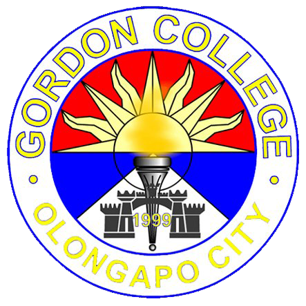

Gordon College, also known as Dalubhasaang Gordon in Filipino, is a local government-funded college in Olongapo City, Philippines.
It was founded on February 24, 1999 by virtue of City Ordinance No. 9, and is composed of four constituent colleges: College of Computer Studies, College of Business and Accountancy, College of Education, and College of Nursing.
Other academic units include the School of Midwifery, Department of Vocational Technology, Faculty of Arts and Sciences, Center for Research and Development, and Institute of Graduate Studies. As of now, Gordon College - College of Computer Studies is an active member and pioneer school in Asia Pacific to roll-out BlackBerry Academic Program. GC-CCS is also academic partner of IBM DB2.GC-CCS program (BSIT,BSCS,ACT) is currently accredited Level 1.
OFFERED PROGRAMS
GRADUATE PROGRAMS
- Master of Arts in Educational Management
- Master of Arts in Nursing
- Master of Arts in Public Administration
- Master of Arts in Business Management
UNDERGRADUATE PROGRAMS
- Bachelor in Elementary Education
- Bachelor in Secondary Education
- Major in Biological Science
- Major in English
- Major in Mathematics
- Major in Social Studies
- Bachelor of Science in Accountancy
- Bachelor of Science in Accounting Technology
- Bachelor of Science in Business Administration
- Bachelor of Science in Customs Administration
- Bachelor of Science in Hotel and Restaurant Management
- Bachelor of Science in Information Technology
- Bachelor of Science in Nursing
- Bachelor of Science in Public Administration
- Bachelor of Science in Tourism
- Associate in Computer Technology
- Associate in Hotel and Restaurant Management
- Graduate in Midwifery
TESDA-ACCREDITED PROGRAMS
- Caregiver Training Program
- Household Services NC II
- Shielded Metal Arch Welding NC II